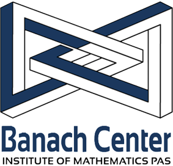

Relational and Algebraic Methods in Computer Science (RAMICS 2026)
Institute of Mathematics of the Polish Academy of Sciences, Będlewo, Poland, April 7-10, 2026
Download the conference program (PDF).
| 9:00 – 9:30 | Mateusz Przybylski. Szymczak Category and Leray Functor for Linear Relations (tutorial, Part 2). |
| 9:30 – 10:00 | Paul Brunet. Representations. |
| 10:00 – 10:30 | Marta Bílková, Wesley Fussner and Roman Kuznets. Agent Interpolation in Distributed Systems. |
| 10:30 – 12:30 | Open Problem Session. |
| 12:30 – 14:00 | Closing and Lunch. |